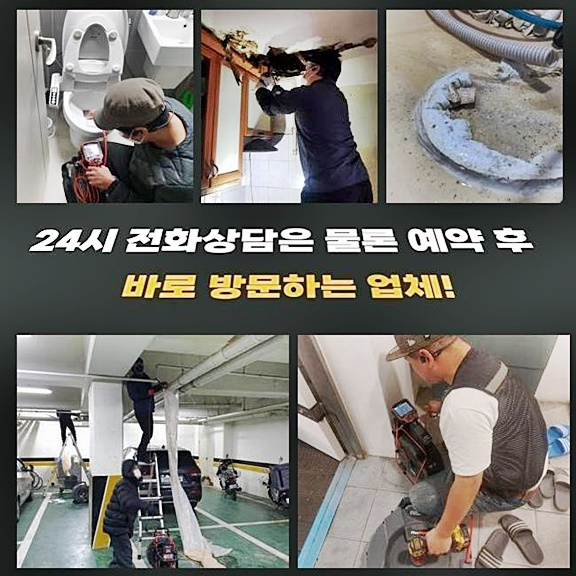
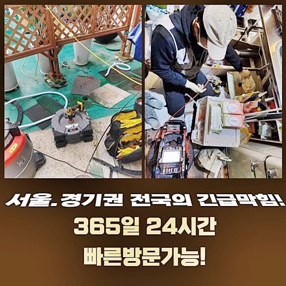
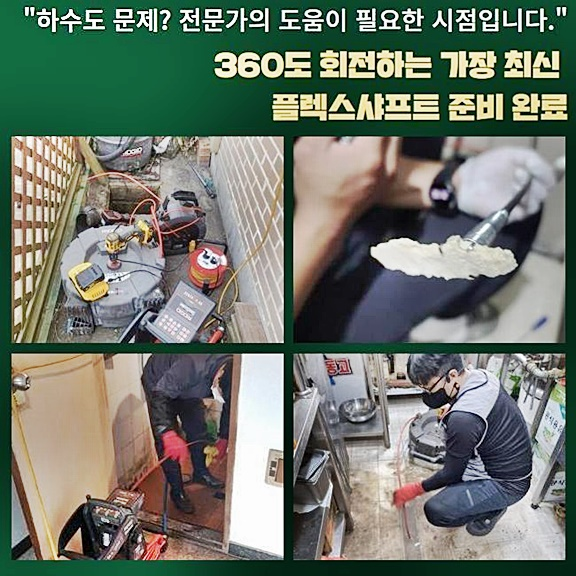
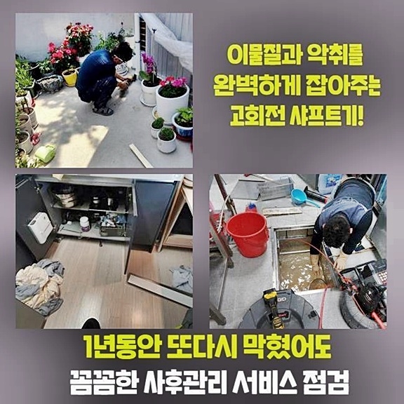
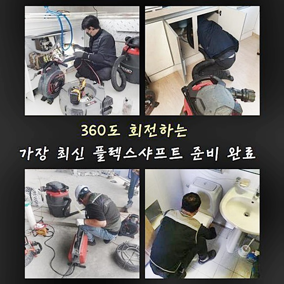
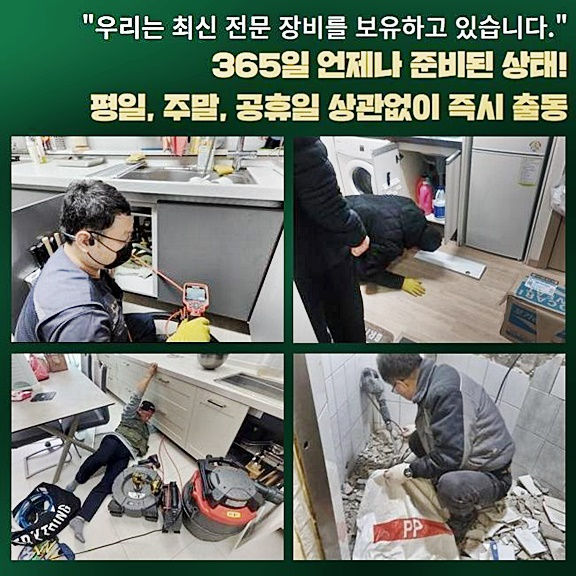
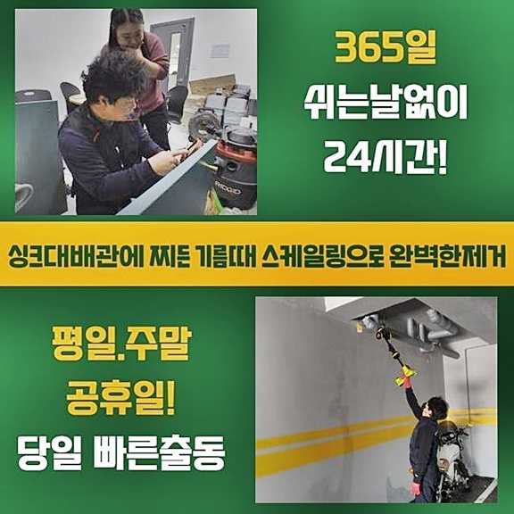

🏠 종로 충신동싱크대배수관막힘 신교동 하수구청소장비 수리업체
용인 싱크대막힘 전문 시공 후기

📋 작업 개요
- 위치: 용인
- 서비스 유형: 싱크대막힘, 하수구막힘, 배관막힘, 역류해결, 배관청소, 고압세척
- 작업 일시: 2024. 9. 2. 18:04
- 업체명: 하수구수사대 (010-5615-2118)
🔍 문제 상황
종로 충신동싱크대배수관막힘 신교동 하수구청소장비 수리업체
이른 아침에 하수라인의 오류로 배수관이 역류하는 곤란한 일이 계속적으로 생긴다는 문의전화를 받고나서 문제를 살펴보고자 해당지역으로 급파되었습니다
배수관의 문제발생은 1차적인 문제로 해결되는 현장은 거의 없고 2차3차의 이상현상으로 이어지는 전반적인 컨디션이 우려되므로 피해의 연속적인 발생을 막는것이 가장 중요하나 심각하게 보지 않는 고객님도 예상보다 많았습니다
저희 전문팀이 작업했었던 문제사항을 하나하나 보고 배관 막힘현상은 왜 신속한 대응을 해야하는지와 수리완료까지 무슨 과정들을 적절하게 이행하는지 명확하게 설명하겠습니다
배관에 악취가 올라오기 시작한다면 말씀했던대로 연관되는 문제들이 발생하는 빈도수가 잦습니다
초입시점에는 단순히 어제보다 정상적인 순환이 더디게 된 상태만 느껴지시겠지만, 그냥둘수록 원활한 흐름이 불가능해지면서 전체적으로 정체현상이 일어나고 불순물이 서로굳어 막히는 문제들로 이어집니다

🔎 원인 분석
💡 전문가 진단: 정밀 진단 장비를 사용하여 슬러지의 고착 여부를 판명하고 타격/세척 작업을 실시했습니다.
연관되는 문제들이 발생했다면 현장이 나쁘다는것을 의미하므로 피해부위를 가장 작게 막기 위해 망설이지 마시고 전문가의 진단을 받아보세요
하수시스템의 오류가 발견된 경우 전문작업이 필수적인 과정인데 금액적인 부분이 부담이 된다는 생각에 전문진단을 주저하시죠
상가와 주거지 밀접지구는 더욱 배관의 말썽으로 인한 일들의 발생률이 높습니다
여러 세대와 가게에서 끊임없이 밀려오는 불순물이 메인배관같은 특정한 부분에 누적되기 시작하면서 결국엔 문제를 발생시키는데 가족단위의 세대와 들어온 가게가 동시에 하수를 사용하며 이물질들이 쌓이는 문제는 흔하게 발견됩니다
배관내벽으로 흐르게 되는 오염원들은 배관 내벽에 달라붙는 특성을 갖고있어 조금씩 층이 이루다가 뭉치는 형태를 만들며 크기를 키워가게 됩니다
덩어리가 커진 이물질이 비정상적 지연을 만들어내는 요소로서 작용하게 되면서 배관의 오류들을 발생시키는 가장 큰 이유입니다
작업의뢰를 받은이후 현장으로 출동하여 제일먼저 막힘현상이 발생한 부위를 살펴보며 전체적인 문제를 예측해냅니다

🔧 작업 과정
전문장비를 통하여 오수가 어느정도 배출되는지 수치화시키는 방법으로 진단을 해본 결과 하수배관으로 순환이 이루어지지 못하고 고약한 냄새가 진행되고 있는걸 알아냈습니다
이럴땐 대부분 광범위하게 노폐물이 쌓여있을 경우들이 다반사인데 빠른 시간내에 오염원을 제거하지 못한 경우 배관 내벽으로 내용물이 부푸는 현상이 반복적으로 생기면서 배수관이 파열되는 매우 난감한 사안까지 대비해야하는 일이 없도록 미리 미리 정비하시는게 좋아요
간편한 점검들을 통해서 보니 하수시스템의 오염도의 정상수치가 아님을 확인했으며 시급하게 정비가 필요했으므로 내시경장비를 통하여 메인배관을 확인해보는 작업들을 시작하게 되었어요
하수구의 막힘과 이어지는 문제점이 반복된다면 내시경장비를 투입해보는게 추천됩니다
오랜시간을 투자해서 복잡한 작업들을 진행시키는 목적은 오류가 나는 문제부위를 분명히 알아내고 시작하는게 안전하기 때문입니다
이러한 과정을 넘기고 원칙을 지키지 않으며 이어지는 수리하는 과정들은 오염원을 완벽하게 제거해내지 못해서 연관된 문제들로 이어집니다
메인의 하수시스템을 전문진이 초기진단해본 결과는 저희가 처음 처음 예상한 것과 같이 오래된 하수로 내부에 불순물이 쌓인 모습을 직접 봤으며 부분적으로는 내부에 막힌 불순물이 물과 만나 부패까지 진행된 상태라는 것을 알아냈습니다
장기간 배수관을 관리 맡긴 분들이 없는지 생각했었던 것보다 많은 양의 불순물이 쌓여있어서 효과적인 방식으로 분쇄하여 배출을 가능케하는 방식에는 고압의 세척기계가 진행에 필요하죠
고압 세척 작업에 대해 명확하게 설명한다면 최대치 압력을 사용해 오수를 발사시켜 노폐물을 파괴시키는 꼴로 과정들이 진행이 됩니다
오수가 내려오는 배관의 역행하는 곳으로 작업과정을 진행하게 되므로 배관의 안쪽으로 자리잡거나 내벽에 쌓인 노폐물까지 남김없이 분쇄시키는 결과물을 보게되는 것입니다
배관의 오류들을 위한 해결책은 오염원을 청소하는 것인 만큼 고압세척기계를 사용한일이 진행가능한 일이라면 현장의 불편함을 완전하게 정리할 수 있습니다


✅ 작업 완료
배관의 문제현상이 잦거나 오염물이 번번이 쌓이게 되는 부위는 정기검사를 위한 전문업체에 맡겨 고압 세척 작업들을 실시하는게 막히는 현상을 미리 막는 것에 적합한 예방책입니다
하수로와 배관들은 일상생활 속에서 관심을 주지않는 상황이 대부분이라서 빈번히 발생합니다
하수시스템의 오류가 발견된다면 조속히 의뢰를 주시는게 더큰 문제로 확산되는걸 막을수 있다라는 사실을 꼭 명심하시면서 오늘의 포스팅은 이것으로 마치겠습니다




⚠️ 주방 싱크대 배관 막힘 예방 수칙
- ✅ 기름기가 묻은 식기나 프라이팬은 설거지 전 키친타올로 반드시 기름때를 닦아내세요.
- ✅ 주기적으로 싱크대 개수대에 뜨거운 물을 가득 받아 한 번에 내려 배관 내부 기름을 씻어내세요.
- ✅ 배수구 거름망을 미세한 필터로 사용하시고 음식물 찌꺼기가 틈으로 새어 들지 않게 관리하세요.
- ✅ 베이킹소다와 식초를 뜨거운 물과 함께 일주일에 한 번씩 부어주면 배관 살균과 막힘 예방에 좋습니다.
💡 핵심 정리
- 확실한 장비 작업(내시경 점검 및 샤프트 스케일링)으로 원인을 뿌리 뽑습니다.
- 작업 후 1년 이내에 동일한 부위 재발 시 100% 무상 A/S 서비스를 보장합니다.
- 서울 · 경기 · 인천 전 지역에 24시간 언제든 긴급 출동할 수 있도록 항시 대기 중입니다.
❓ 자주 묻는 질문 (FAQ)
🚨 용인 싱크대막힘 문제로 고민이신가요?
정확한 원인 진단과 확실한 시공으로 재발 없는 해결을 약속드립니다.
24시간 긴급 출동 | 서울 · 경기 · 인천 전지역 | 1년 내 재발 시 무상 A/S